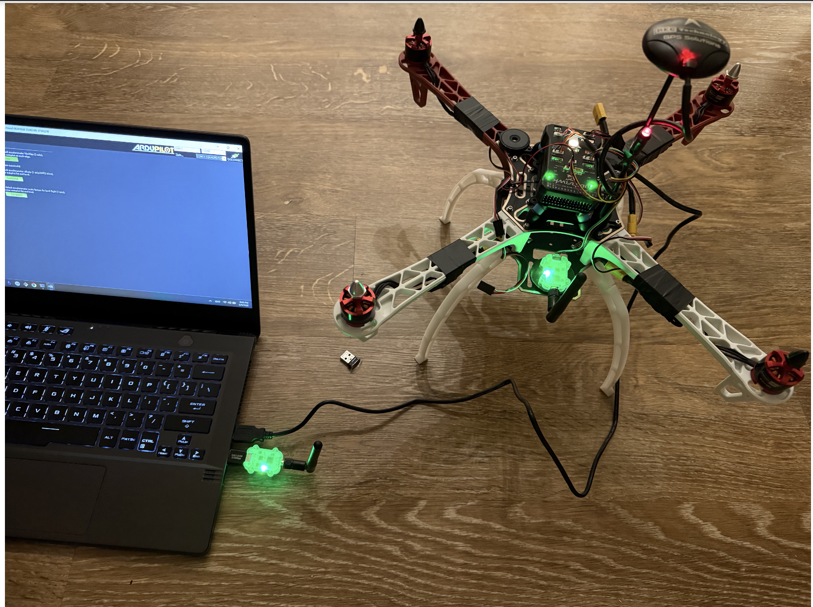

01 / FPGA & Computer Architecture
6502 FPGA CPU Core
Microcoded 8-bit CPU architecture implemented in Verilog for the DE10-Lite FPGA platform.
Explore project →ELECTRICAL ENGINEERING / PROJECT PORTFOLIO
Electrical Engineering graduate with hands-on project experience in embedded systems, FPGA architecture, PCB design, digital circuits and robotics.
SELECTED WORK
Final designs, source code, simulation evidence and technical documentation.
01 / FPGA & Computer Architecture
Microcoded 8-bit CPU architecture implemented in Verilog for the DE10-Lite FPGA platform.
Explore project →
02 / Embedded Systems & PCB Design
Custom STM32F103-based robotics controller with sensor, communication and drive interfaces.
Explore project →
03 / Robotics & Automation
Sensor-driven mobile robot with line following, obstacle avoidance and object handling.
Explore project →
04 / Embedded Systems & PCB Design
Environmental sensing board built around an Arduino Nano footprint and dedicated sensor interfaces.
Explore project → A[3:0] ─┐
├─ ALU ─ Y[3:0]
B[3:0] ─┘Conceptual illustration05 / Digital Design & VLSI
Transistor-level arithmetic and logic circuit design using Electric VLSI and SPICE.
Explore project →
06 / Robotics & Automation
Arduino-based four-motor robot with switch-selectable line tracking and proximity-based behaviors.
Explore project →
07 / Embedded Systems & PCB Design
Custom Arduino UNO shield combining digital temperature sensing, OLED readout and motion-aware display orientation.
Explore project →DC supply → Charge pump → Vout
↑ ↓
Ring oscillator ← RegulationConceptual diagram based on source netlist08 / Analog & Power Electronics
CMOS switched-capacitor converter integrating a five-stage charge pump, ring oscillator and voltage regulation circuit.
Explore project → b[4:0] → Resistor-divider ladder → Vout
│
10 pFConceptual diagram based on source netlist09 / Analog & Power Electronics
Resistor-divider DAC with transistor-process layout, five digital inputs and SPICE transient analysis.
Explore project →
10 / FPGA & Computer Architecture
Microprogrammed Verilog processor with instruction sequencing, ROM, arithmetic datapath and UART debugging.
Explore project →
11 / FPGA & Computer Architecture
Two-player countdown timer using a Moore finite state machine, counters and display control.
Explore project →
12 / FPGA & Computer Architecture
Serial communication and finite state word detection driving a timed seven-segment display.
Explore project →
13 / FPGA & Computer Architecture
Verilog accumulators, add/subtract logic, array multipliers, registered multipliers and parallel adder trees.
Explore project →
14 / Research & Development
RESEARCH IN PROGRESS
Research proposal for a reproducible A→B→A aerial delivery mission integrating payload-aware flight control, precision delivery and safe return-to-base.
Explore research project →
15 / RF & Communications
Breadboard SDR receiver prototype using quadrature RF downconversion, Raspberry Pi Pico signal processing and OLED/audio interfaces.
Explore project →SUPPORTING ENGINEERING WORK
Firmware for 12-bit ADC voltage acquisition using DMA, UART telemetry and PWM motor control. Includes a schematic and block diagram.
Timer-based ultrasonic trigger and echo measurement, distance calculation and UART diagnostics. Includes firmware and a block diagram.
TECHNICAL TOOLKIT
Verilog HDL · Microcoded CPU architecture · FPGA simulation · Electric VLSI · SPICE
STM32 · Arduino C++ · UART · I²C · PWM · Sensor interfaces
KiCad · Schematic capture · PCB routing · Gerber exports · BOM preparation
Resistor-divider DACs · Switched-capacitor charge pumps · CMOS oscillators · SPICE transient analysis
Quadrature sampling · RF downconversion · PIO local oscillator · SDR signal processing
State machines · Motor control · Sensor calibration · Testbenches · Python tools
EDUCATION
Electrical Engineering graduate with project experience in embedded systems, electronics, digital design, FPGA development and hardware–software integration.
CONNECT
Project files, design revisions and documentation are available on GitHub.
View GitHub profile ↗